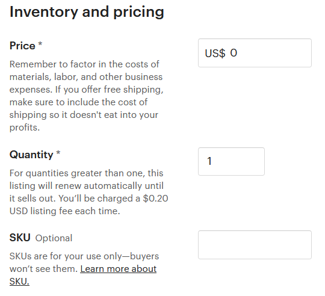
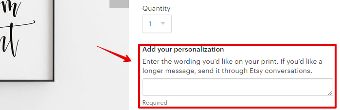
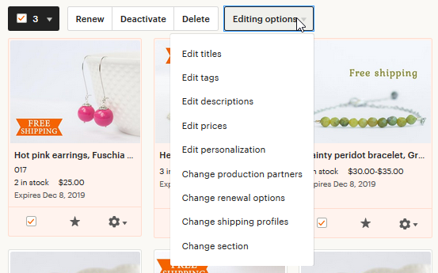
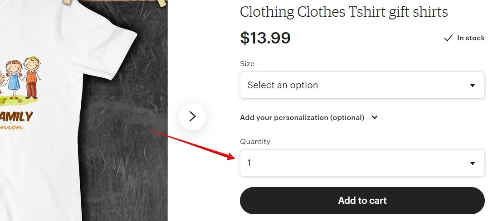
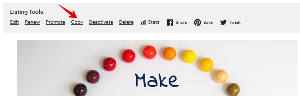

Сложно придумать, что здесь указать для цифровых товаров. Кто-то из
продавцов указывает название программы, в которой был создан доку-
мент, кто-то пишет, какие файлы получит покупатель (2 PDF files).
• Price: цена на товар в долларах (или в той валюте, которую вы выбрали в
настройках).
• Quantity: количество товара в наличии. Лучше выставить здесь большое
число, например, 100 или 999, чтобы при продаже ваш товар оставался
активным и не исчезал из магазина.
• SKU: артикул товара (если он у вас есть; параметр видите только вы)
Следующий пункт добавления товара – персонализация (Personalization).
Если вы можете добавить к своим товарам какую-то уникальную информацию
покупателя (дату рождения, имя, инициалы, памятную фразу и т.п.) – можно
включить этот пункт в настройках.


В этом случае также нужно указать:
• Instructions for buyers – инструкция для покупателей, что писать в поле
персонализации при заказе товара
• Personalization is optional – если отмечено, то поле персонализации поку-
пателю заполнять не обязательно
• Character limit – максимально количество символов, которое может вве-
сти покупатель
В вашем магазине покупатель увидит это следующим образом:
Далее загрузите на Etsy ваши файлы. Они будут доступны покупателям сразу
после оплаты. Можно загрузить от 1 до 5 файлов. Максимальная длина назва-
ния файла – 70 символов. Этси не меняет название загруженного документа, а
покупатели видят его таким, как вы указали. Поэтому перед загрузкой про-
верьте, чтобы названия были понятными для покупателя.


Размер файла может быть не более 20Mb. Если ваш файл превышает указанный
размер, то можно поступить следующим образом: в данный листинг загрузить
pdf-файл, который будет содержать инструкции и ссылку на скачивание цифро-
вого товара, загруженного на файлообменник, например, Google Drive.
Типы файлов, которые поддерживаются Этси:
• Аудио: mpeg и mp3
• Изображения: gif, jpeg, png, tiff, bmp, pdf
• Текстовый: txt
Если у вас включена реклама Etsy Ads, то на последнем шаге настроек в пункте
Marketing вы можете выбрать, отправить ли новый листинг в рекламу. По умол-
чанию выбран пункт Yes, advertise this listing (да, рекламировать этот листинг).
Если выбрать Maybe later, то листинг в рекламу не добавится.
После того, как вы выбрали все параметры, можете размещать листинг в мага-
зине. Для этого нажмите кнопку Publish.
Также можно сохранить листинг как черновик (Save as draft), если вы пока не
заполнили все поля (за это деньги не берутся) или с помощью кнопки предпро-
смотра оценить, как его увидят покупатели (Preview).


Как создать черновик листинга
Если вы не хотите сразу выкладывать товар на витрину Etsy (например, нужно
внести правки в текст или загрузить фотографии), то можно сохранить листинг
в черновики.
Для этого внизу страницы создания листинга нажмите кнопку Save as draft.
После этого листинг попадёт в раздел Draft раздела Listings.
Вы в любой момент можете вернуться к его редактированию, а затем опубли-
ковать (кнопка Publish).
При сохранении листинга в Черновики (Draft) вы не платите 20 центов за раз-
мещение. Это происходит только в момент публикации.

Как отредактировать несколько листингов разом
Для этого перейдите в раздел Listings, выделите галочками нужные товары и
нажмите кнопку Editing options.
У вас откроется выпадающее меню, в котором для выбранных листингов можно
изменить следующие параметры:
• Edit titles – изменить заголовки (добавить фразу в начало или конец, за-
менить или удалить слово/фразу)
• Edit tags – добавить или удалить какой-то определенный тэг у всех ли-
стингов разом
• Edit descriptions – изменить описание товаров (добавить фразу в начало
или конец, заменить или удалить слово/фразу)
• Edit prices – изменить цены (увеличить или уменьшить на определенное
количество долларов или процентов, назначить всем товарам одну цену)
• Edit personalization – включить или выключить у товаров возможность
персонализации
• Change production partners – сменить партнёра по производству товаров
• Change renewal options – назначить ручное или автоматическое обнов-
ление товаров после 4 месяцев размещения
• Change shipping profiles – изменить профиль доставки
• Change section – изменить секцию

Почему цена моих цифровых товаров выше, чем я указал(а)
в настройках товара
Для покупателей из ряда стран Etsy автоматически добавляет к указанной вами
стоимости цифровых товаров VAT налог (НДС) этой страны.
К числу таких стран относятся Россия, Беларусь, Норвегия, Швейцария, Ислан-
дия, страны Евросоюза, Южная Корея, Индия, Австралия, Новая Зеландия, ЮАР,
Турция, ОАЭ, Тайвань.
Например, вы продавец из России и продаёте цифровые товары. Вы выставили
цену листинга 10 долларов. Если вы посмотрите на свой готовый листинг, то
увидите, что его стоимость равна 12 долларам.
Всё потому, что Этси автоматически считают вас покупателем из России, по-
этому они добавили к цене российский НДС – 20% (то есть $2 плюсом к 10
долларам). А, например, жители США видят и платят ту цену, которую выставили
вы – то есть 10 долларов.
Но это не значит, что вы будете зарабатывать больше благодаря покупателям
из этих стран. Эти “лишние” деньги нужно будет вернуть Etsy вместе со всеми
комиссиями за прошедший месяц (если вы принимаете оплаты на PayPal).
Почему на странице товара нет параметра Quantity
Когда вы добавляете листинг, то в пункте Quantity указываете, сколько единиц
товара у вас есть в наличии.


Если Quantity больше 1, то покупатель может купить несколько штук вашего
изделия.
Но у некоторых листингов, даже если Quantity в настройках указано больше 1,
этого выпадающего списка нет в параметрах товара.
Дело в том, что для товаров дороже 20 долларов Etsy решили не показывать
данную опцию.
Если клиент хочет несколько изделий, то он должен указать количество в кор-
зине.

Можно ли скопировать старый листинг и сделать на его ос-
нове новый
Да, на Etsy есть такая функция. Она очень полезна, когда у вас похожие товары
и в листинге есть несколько одинаковых полей, которые не хочется заполнять
раз за разом по новой.
Это можно сделать двумя способами.
Способ 1 – Listing Manager
Перейдите на страницу Shop Manager – Listings и возле нужного товара нажмите
на значок шестерёнки, а затем Copy.
Способ 2 – со страницы самого товара
Перейдите на страницу своего магазина и откройте страницу нужного товара.
Сверху над фотографиями будут ссылки, которые видны только вам. Нажмите
на ссылку Copy.

Если товар мало смотрят, можно ли вместо него выставить
другой
В правилах Этси раньше было прямо сказано, что данные действия запрещены,
поскольку это расценивается как уклонение от уплаты комиссии (20 центов за
размещение): «Examples of Fee Avoidance: editing a listing's information to
change it to an entirely different item».
На текущий момент такой формулировки в правилах нет – хотя параграф об
уклонении от уплаты комиссий остался (с другими примерами).
На деле ни разу не слышала, чтобы за это наказывали. Знаю, что многие про-
давцы редактируют листинги, размещая в них другие, похожие товары.
Можно ли создать два листинга для одного товара
Да, вы можете так сделать. Можно для одного листинга указать одни ключевые
фразы, а для другого – другие.
Чтобы не вводить в заблуждение покупателей, вы можете выставить разные за-
главные фотографии.
Какую категорию выбрать для товара
При добавлении нового товара обязательно нужно указать его категорию. Это
можно сделать вручную (нажав на ссылку You can also add them manually) или
воспользоваться подсказками Etsy.